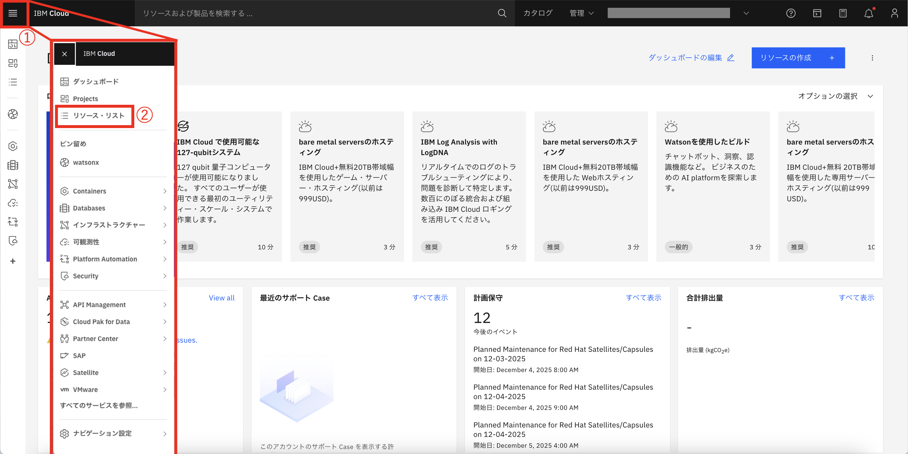
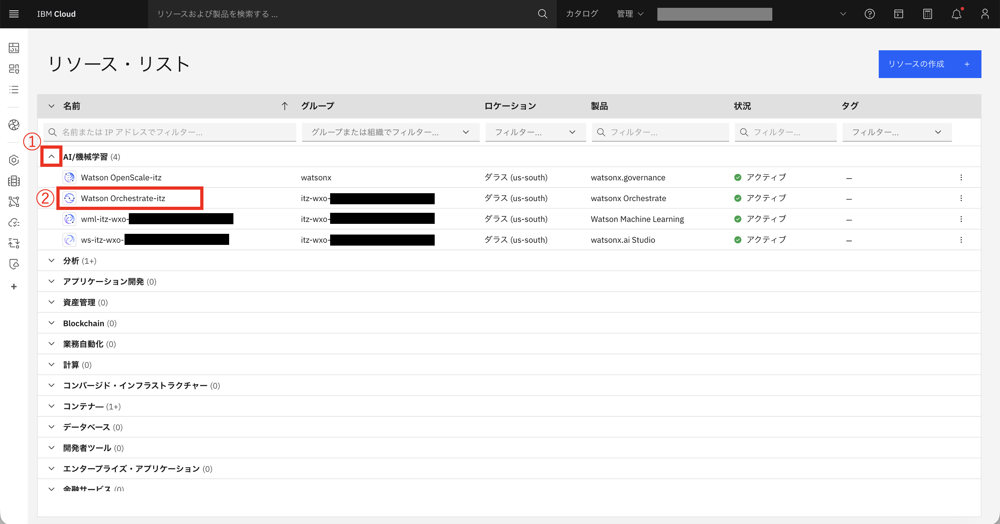
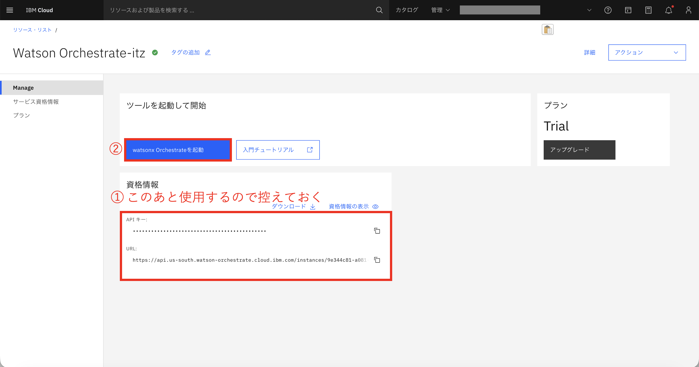
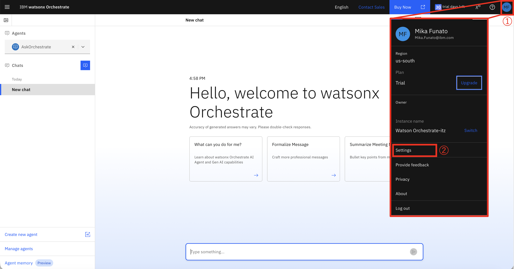
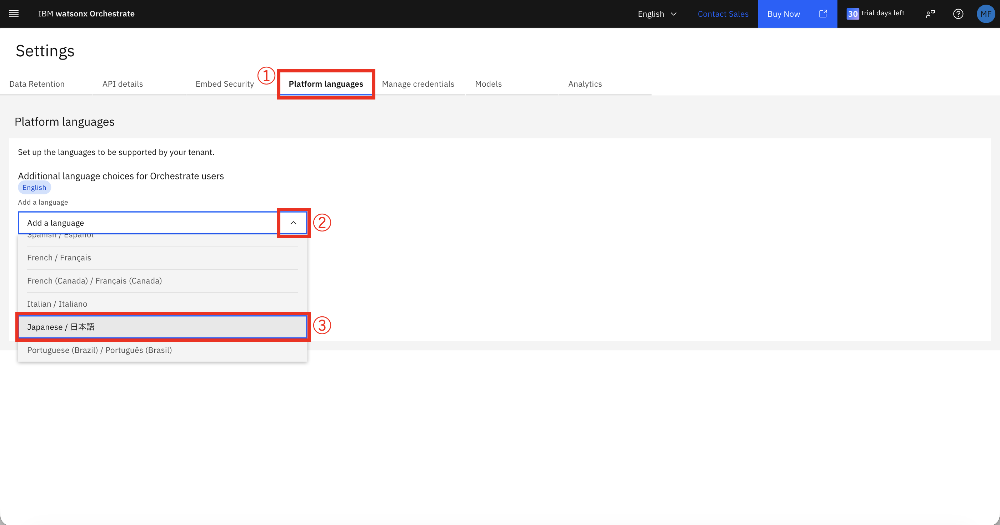
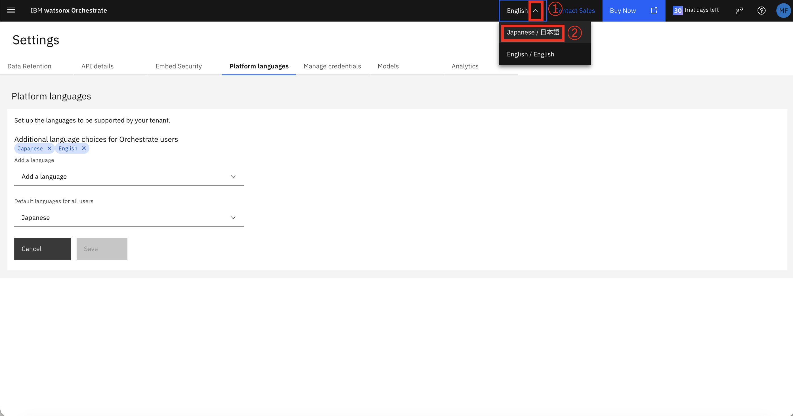
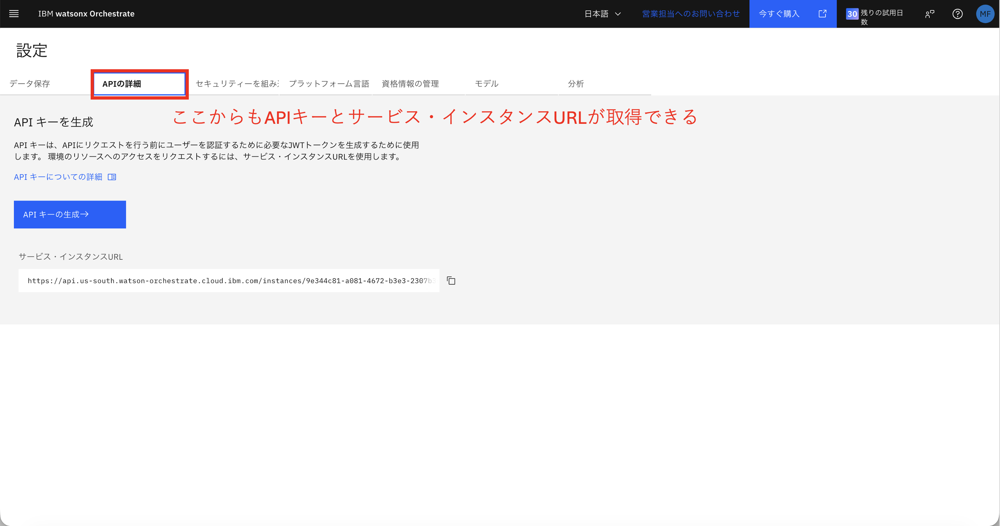

watsonx Orchestrateとは
watsonx Orchestrateは、IBMが提供するAIオーケストレーションプラットフォームで、複数のAIエージェント、ツール、ワークフローを統合して、複雑なビジネスプロセスを自動化する。
主な機能
- マルチエージェントオーケストレーション
- ノーコード/ローコードでのワークフロー構築
- 外部システムとの統合（API、データベース等）
- エンタープライズグレードのセキュリティとガバナンス
- リアルタイムモニタリングと分析
IBM Cloudアカウントの作成 (IBM idとは異なります)
ステップ1: IBM Cloudへの登録
- IBM Cloud登録ページにアクセス
- メールアドレスを入力して「次へ」をクリック
- IBM idがある場合は、そのままログインできる
- 確認メールが送信される
ステップ2: アカウントの確認とログイン
- IBM Cloudコンソールにログイン
- ダッシュボードが表示されることを確認
- 右上のアカウント名をクリックして、アカウント情報に間違いがないか確認
watsonx Orchestrateの起動確認
- IBM Cloudにアクセス
- ①ハンバーガーメニューから②「リソースリスト」をクリック
- ①「AI/機械学習」のプルダウンをクリック、②「watsonx Orchestrate」をクリック
- ①資格情報の「APIキー」と「URL」を控え、②「watsonx Orchestrateを起動」をクリック
- watsonx Orchestrateが起動する。画面の言語を日本語に変えるために、①右上のプロフィールから、②「Setting」をクリック
- ①「Platform Language」をクリック、②「Add language」のプルダウンをクリックし、③「日本語」をクリック
- Saveし、①「English」のプルダウンをクリック、日本語をクリックしてApplyしたら完了
- 「APIの詳細」からも資格情報を取得することができる







watsonx Orchestrate ADKのセットアップ
watsonx Orchestrate ADK（Agent Development Kit）は、エージェントを開発するためのツールキットである。
ADKセットアップガイド
https://developer.watson-orchestrate.ibm.com/getting_started/installing
https://developer.watson-orchestrate.ibm.com/getting_started/installing
このガイドの 「Setting up and installing the ADK」 まで実行します。ガイドには以下の内容が詳しく説明されています：
- システム要件と前提条件
- ADKのインストール手順
- 環境変数の設定
- 認証情報の設定
- 動作確認とトラブルシューティング
重要なポイント
注意事項：
- ADKのインストールには、watsonx Orchestrateの有効なアカウントが必要である
- APIキーは前のセクションで取得したものを使用すること